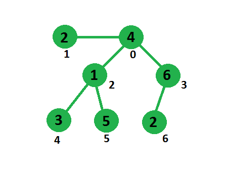

Given an undirected tree whose each node is associated with a weight. We need to delete an edge in such a way that difference between sum of weight in one subtree to sum of weight in other subtree is minimized.
View more on Graph
https://www.geeksforgeeks.org/graph-data-structure-and-algorithms/